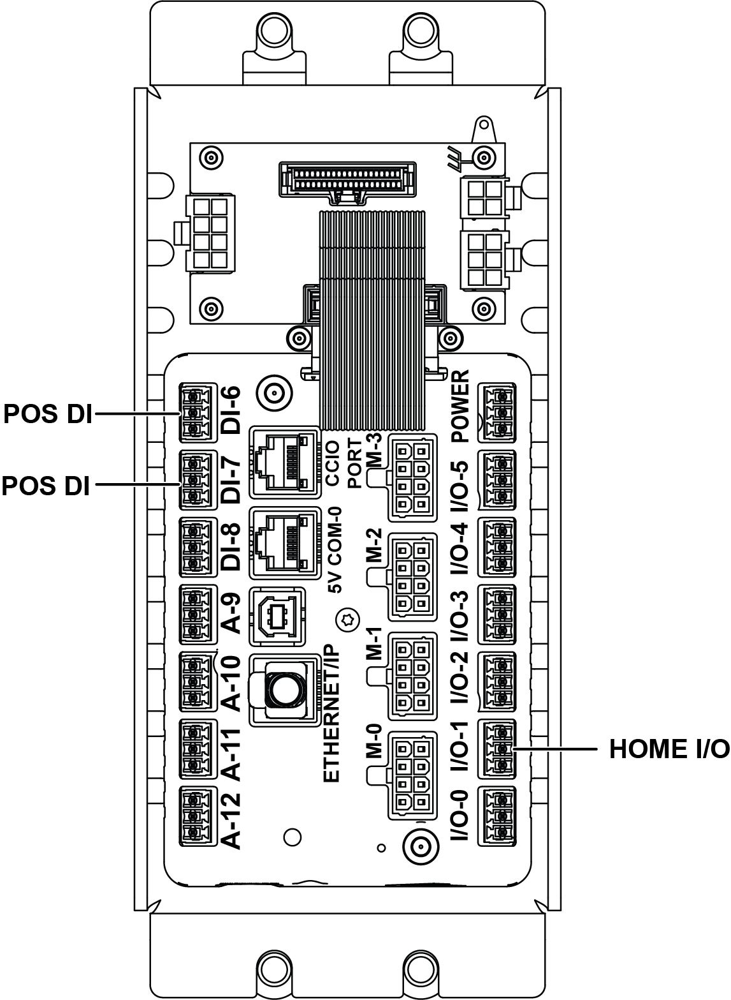

| Procedure ID | proc_replace_and_install_the_clearlink_clink_controller_v1 |
|---|---|
| Title | Replace And Install The ClearLink (CLINK) Controller |
| Procedure Type | recovery |
| Primary Role | L2_support |
| Support Safe | No |
| Validation Status | needs_sme_review |
| Merge Status | source_finalized |
Install a new ClearLink (CLINK) controller in place of the old controller, secure the controller box and panels, and restart the operator station using the referenced startup procedure.
Use when replacing an existing ClearLink (CLINK) controller with a new controller and restoring the operator station to service, as described in the installation section of the source manual.
Responsible role: L2_support
Instruction:
Transfer all the connections from the old controller to the new controller.
Expected result:
All connections from the old controller are moved to the new controller.
Screens / Images:

Stop or Escalate If:
Responsible role: L2_support
Instruction:
Place the new controller in the box and fasten it with the two (2) M5 socket-head screws.
Expected result:
The new controller is positioned in the box and secured with the specified screws.
Stop or Escalate If:
Responsible role: L2_support
Instruction:
Hang the control box on the M8 button-head screws on the stand, and feed excess cable back into the stand without pinching any wires.
Expected result:
The control box is hung on the stand and excess cable is routed back into the stand without wire damage.
Screens / Images:
Stop or Escalate If:
Responsible role: L2_support
Instruction:
Tighten the four (4) M8 button-head screws securing the controller box to the stand.
Expected result:
The controller box is firmly secured to the stand.
Screens / Images:
Stop or Escalate If:
Responsible role: L2_support
Instruction:
Reinstall the top and/or bottom side panels, if necessary.
Expected result:
Any removed top and/or bottom side panels are reinstalled.
Stop or Escalate If:
Responsible role: L2_support
Instruction:
Re-start the operator station using the documented procedure referenced as "Starting The Operator Station" on page 66.
Expected result:
The operator station restarts normally using the referenced startup procedure.
Stop or Escalate If: